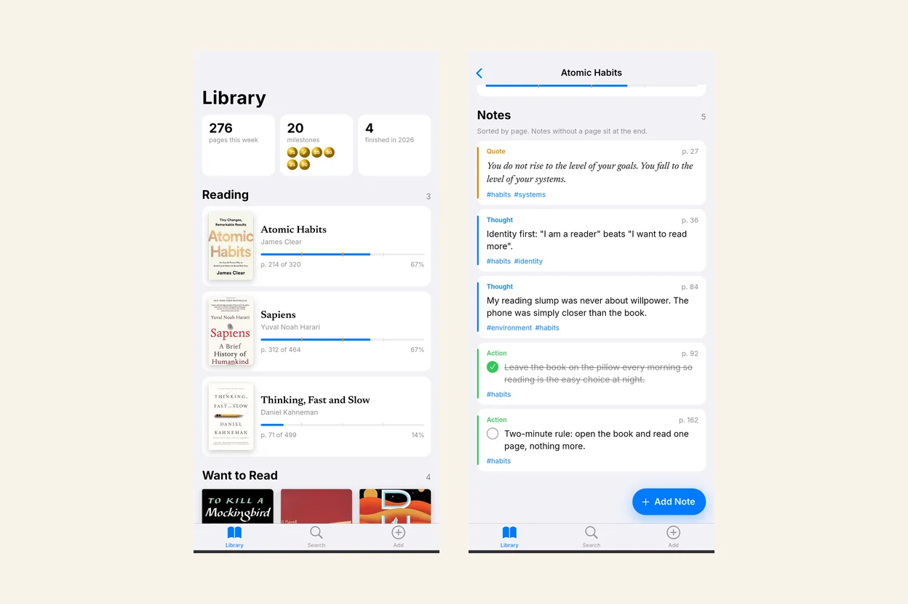
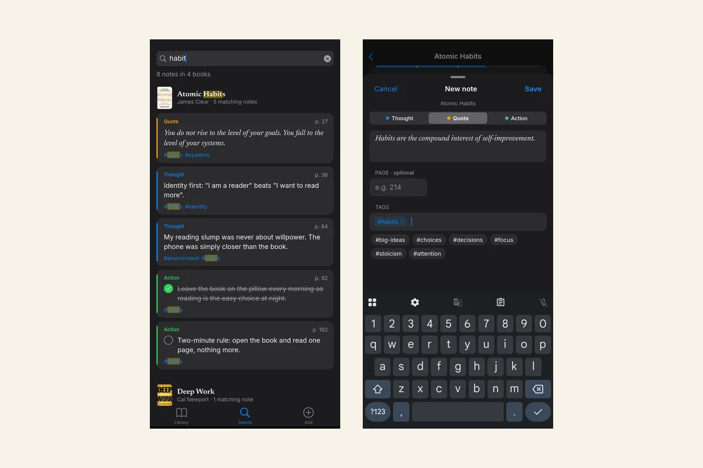

InkLeaf
A personal Goodreads without the social side: your bookshelf, your notes, your library.
- Status
- In development
- Platform
- Android phones and tablets
- Role
- Solo — product, design, build
- Year
- 2026
What it is
A bookshelf that remembers what you read.
InkLeaf is an offline-first bookshelf for Android for every book you read, whether paper, ebook or audiobook. Put books on your shelf, track your reading, and keep notes inside each one.
Over time those notes become a personal knowledge library: a quote from page 27, a thought from page 84, an action you promised yourself, all tagged and searchable across every book you have read.
Single user, no account, no ads. The core app is free; an optional one-time InkLeaf Plus will add cloud backup, a home screen widget, reading stats and Goodreads import.
Features
What it does.
Scan to shelve
Scan the barcode or type the ISBN. Open Library fills in the title, cover and page count, with Google Books as a fallback.
Three shelves, real progress
Want to Read, Reading, Finished. Progress counts real pages, even for volumes that start at p. 425.
Notes inside each book
Quotes, thoughts and actions, pinned to a page and tagged. Tick an action off when you have actually done it.
Search everything
Full-text search across every note, tag, title and author, even on partial words.
Offline, no account
Your library is a database on your phone. Nothing leaves it unless you send it.
Backups you control
A backup file to save anywhere, or scheduled backups to your own Google Drive or Dropbox, with restore. Markdown export too.


Built with
- Flutter
- Dart
- Riverpod
- Drift
- SQLite FTS5
- Open Library API